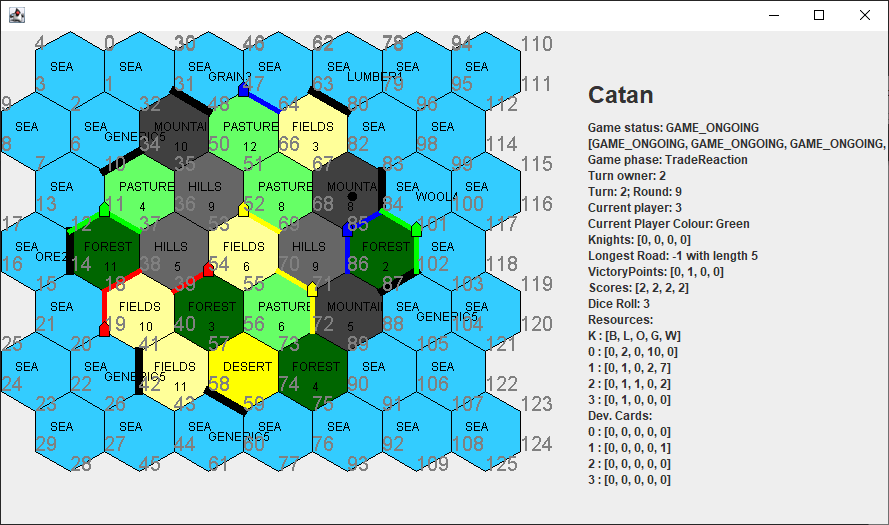

An ongoing game of Settlers of Catan in TAG
- Java 17
- Tabletop Games Framework
Technologies:
Implementation of Catan and Development of an Artificial Intelligence Agent for the Tabletop Games Framework
For my final year project at QMUL I was fortunate to have the opportunity to work on the Tabletop Games Framework alongside a cohort of world-leading researchers and PhD students. I worked on the development of the classic board game Settlers Of Catan (Klaus Teuber, 2008) and was responsible for the implementation of several core features such as trading. Our implementation of Catan then served as a platform for conducting research into the abilities of various different AI agents. My findings are documented in this report.